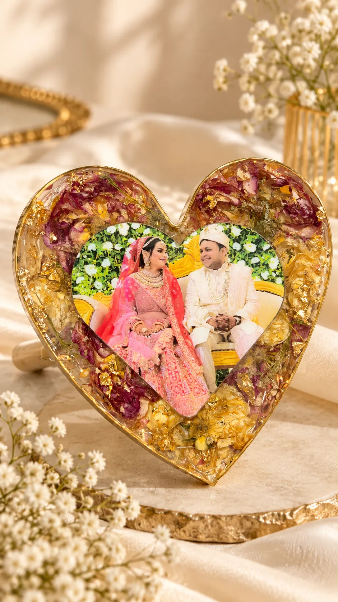
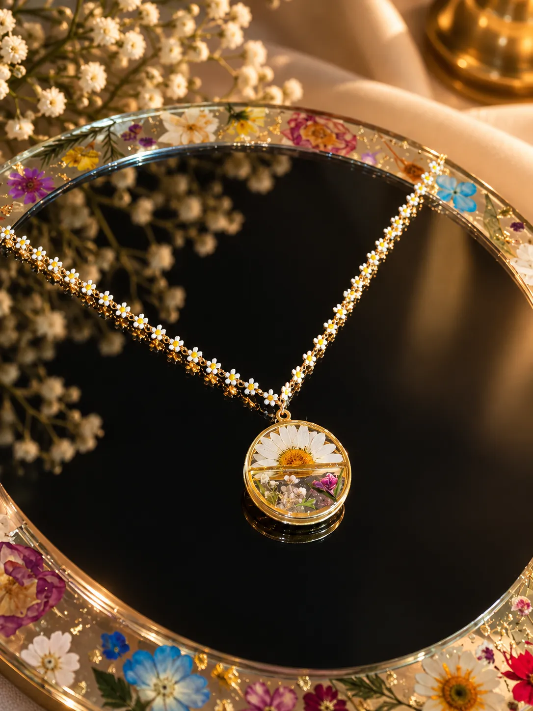
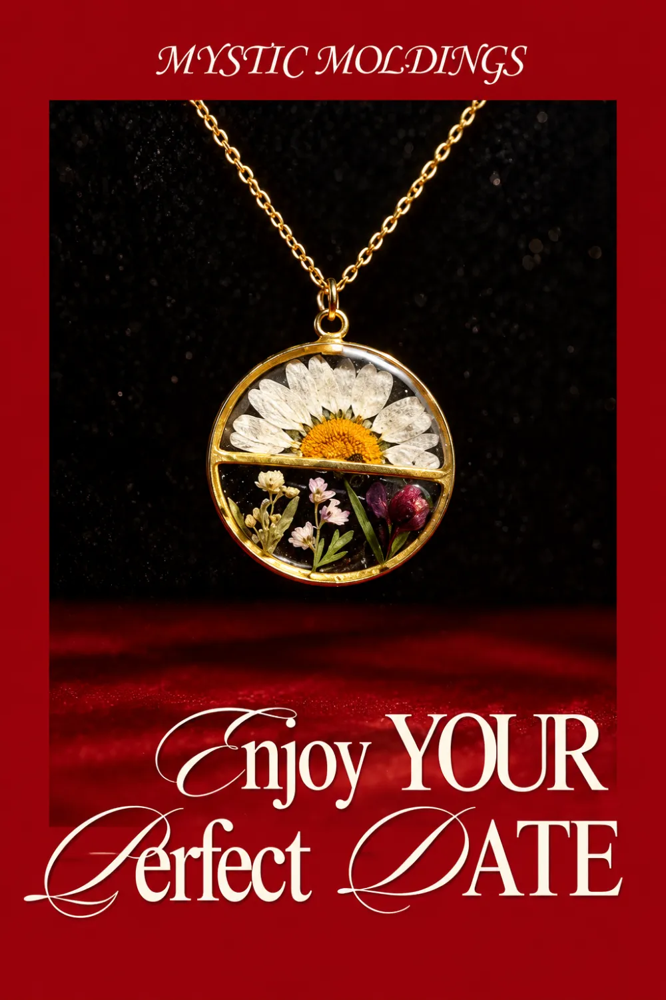
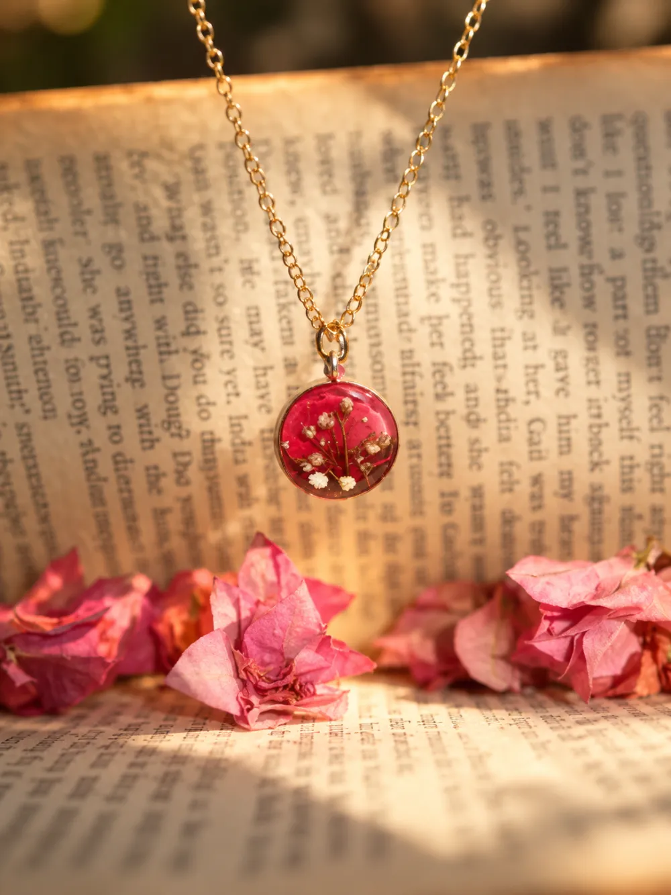

THE WEDDING KEEPSAKEFrom “I do” to always.
The varmala from your wedding. The bouquet you held a little tighter. A piece of that beautiful beginning, preserved for all the days ahead.
SOME THINGS DESERVE TO STAY.
The flowers from your favourite day. A little piece of someone you love. We turn the things that mean everything into art you can hold onto, forever.
Preserve your memory ↗Or find a little everyday magic →Thoughtfully handcrafted.
Always one of a kind.

Beautiful things. Even more beautiful meanings.
TWO WAYS TO FIND YOUR FOREVER
Some pieces bring beauty into your day.
Others bring you back to a day you’ll never forget.
SMALL DETAILS. EVERYDAY DELIGHT.
A preview of what’s to come. Prices are indicative; ordering isn’t live yet.

THE DATE-NIGHT EDIT
Gift a pressed-flower pendant for the evening, or bring us the flowers from it and we’ll hold them in resin for good. Either way, the night stays with you.
BECAUSE IT WAS NEVER JUST A FLOWER
Every memory has a story.
Here’s how yours could live on.

THE WEDDING KEEPSAKEThe varmala from your wedding. The bouquet you held a little tighter. A piece of that beautiful beginning, preserved for all the days ahead.

THE JUST-BECAUSE FLOWERA first date. A thoughtful surprise. A flower from someone who knew exactly what to say without saying a word. Some gestures deserve forever.
 THE FOREVER COMPANION
THE FOREVER COMPANIONA tiny tuft of fur, a lifetime of unconditional love. A gentle reminder of the companion who made your world a softer, happier place.
Stories shown are illustrative inspirations, not customer accounts. Your story will always be yours to share.
BEHIND THE CRAFT
Real pieces from our studio. Every pour, every petal and every little glint of gold, placed by hand.
See more on InstagramA real rose, sealed in resin
Gold leaf, kundan and a little Ganesha
A tiny vial, held in ocean-blue resin
Hand-poured petals, softly lit
FROM YOUR HANDS, TO OUR HEARTS
At Mystic Moldings, we believe the most beautiful things aren’t just seen. They’re felt. We bring a little patience, care, and craftsmanship to the moments you want to keep.
Share what you’d like to preserve and what you have in mind. We’ll dream up the details together.
Once we’ve agreed on a design, we’ll guide you on safely packing and sending your keepsake.
We carefully create your one-of-a-kind piece, ready to find a special place in your home or heart.
Not everything lasts forever.
Let’s make the meaningful things stay.
LET’S STAY A LITTLE CLOSER
Visit our profile to explore Mystic Moldings and start a conversation about a piece that means something to you.
Our little corner of Instagram
@mystic_moldingsFROM OUR STUDIO